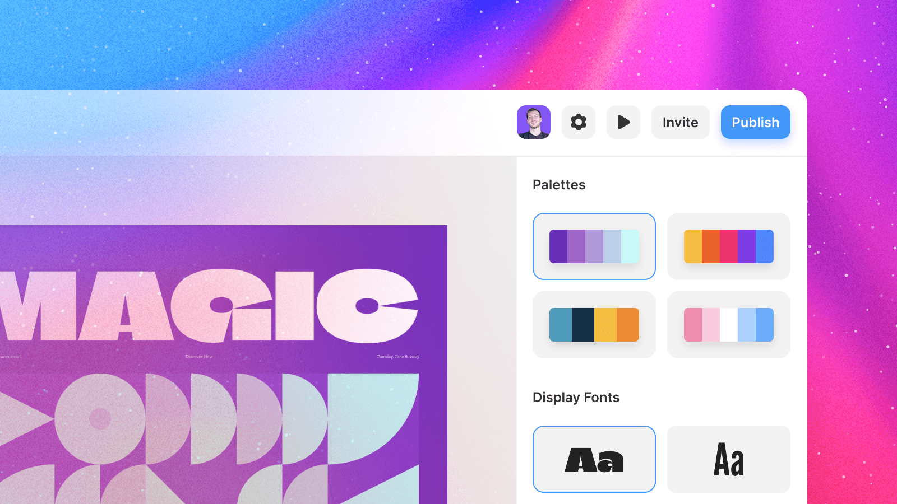

Starting Your Website with Framer and AI
Image Credits https://www.framer.com/updates/ai
Are you looking to start your very first website but don't know where to begin? Have you tried different website builders but always end up with unsatisfactory results? Look no further than Framer with AI.
With Framer's latest update, you can now use AI to design your website with ease. Simply ask Framer to design your personal portfolio, startup landing page, or any type of site you need. Specify the color scheme and other details of your project, and Framer will generate a design for you in seconds.
Customizing your site is also a breeze with Framer's AI. Select your header or headline, and let AI randomize the colors and rewrite the copy for you. The process is quick and easy, so you can have your site up and running in no time.
Curated by Team Akash.Mittal.Blog
Share on Twitter Share on LinkedIn